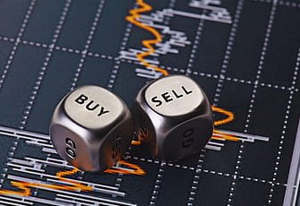

MAKING BUYING AND SELLING EASIER
Trading for beginners can be exciting – and overwhelming. That’s why we’ve outlined everything you need to know for your trading journey, including how to trade stocks and forex trading for beginners.Tradihow to trade stocks and forex trading for beginners.Trading for beginners can be exciting – and overwhelming. That’s why we’ve outlined everything you need to know for your trading journey, including how to trade stocks and forex trading for beginners.Trading for beginners can be exciting – and overwhelming. That’s why we’ve outlined everything you need to know for your trading journey, including how to trade stocks and forex trading for beginners.Trading for beginners can be exciting – and overwhelming. That’s why we’ve outlined everything you need to know for your trading journey, including how to trade stocks and forex trading for beginners.Trading for beginners can be exciting – and overwhelming. That’s why we’ve outlined everything you need to know for your trading journey, including how to trade stocks and forex trading for beginners.Trading for beginners can be exciting – and overwhelming. That’s why we’ve outlined everything you need to know for your trading journey, including how to trade stocks and forex trading for beginners.
Trading for beginners can be exciting – and overwhelming. That’s why we’ve outlined everything you need to know for your trading journey, including how to trade stocks and forex trading for beginners.Trading for beginners can be exciting – and overwhelming. That’s why we’ve outlined everything you need to know for your trading journey, including how to trade stocks and forex trading for beginners.Trading for beginners can be exciting – and overwhelming. That’s why we’ve outlined everything you need to know for your trading journey, including how to trade stocks and forex trading for beginners.Trading for beginners can be exciting – and overwhelming. That’s why we’ve outlined everything you need to know for your trading journey, including how to trade stocks and forex trading for beginners.Trading for beginners can be exciting – and overwhelming. That’s why we’ve outlined everything you need to know for your trading journey, including how to trade stocks and forex trading for beginners.Trading for beginners can be exciting – and overwhelming. That’s why we’ve outlined everything you need to know for your trading journey, including how to trade stocks and forex trading for beginners.Trading for beginners can be exciting – and overwhelming. That’s why we’ve outlined everything you need to know for your trading journey, including how to trade stocks and forex trading for beginners.
Bitcoin is a decentralized digital currency. Bitcoin transactions are verified by network nodes through cryptography and recorded in a public distributed ledger called a blockchain. The cryptocurrency was invented in 2008 by an unknown entity under the name Satoshi Nakamoto. Wikipedia Symbols: BTC, ฿, ₿ Block reward: ₿6.25 Circulating supply: ₿18,925,000 Code: BTC, XBT Exchange rate: Floating Hash function: SHA-256 (two rounds) Implementation(s): Bitcoin CoreBitcoin is a decentralized digital currency. Bitcoin transactions are verified by network nodes through cryptography and recorded in a public distributed ledger called a blockchain. The cryptocurrency was invented in 2008 by an unknown entity under the name Satoshi Nakamoto. Wikipedia Symbols: BTC, ฿, ₿ Block reward: ₿6.25 Circulating supply: ₿18,925,000 Code: BTC, XBT Exchange rate: Floating Hash function: SHA-256 (two rounds) Implementation(s): Bitcoin Core
Bitcoin is a decentralized digital currency. Bitcoin transactions are verified by network nodes through cryptography and recorded in a public distributed ledger called a blockchain. The cryptocurrency was invented in 2008 by an unknown entity under the name Satoshi Nakamoto. Wikipedia Symbols: BTC, ฿, ₿ Block reward: ₿6.25 Circulating supply: ₿18,925,000 Code: BTC, XBT Exchange rate: Floating Hash function: SHA-256 (two rounds) Implementation(s): Bitcoin CoreBitcoin is a decentralized digital currency. Bitcoin transactions are verified by network nodes through cryptography and recorded in a public distributed ledger called a blockchain. The cryptocurrency was invented in 2008 by an unknown entity under the name Satoshi Nakamoto. Wikipedia Symbols: BTC, ฿, ₿ Block reward: ₿6.25 Circulating supply: ₿18,925,000 Code: BTC, XBT Exchange rate: Floating Hash function: SHA-256 (two rounds) Implementation(s): Bitcoin Core. CLICK HERE TO READ HERE
.
Will Bitcoin price rise or fall? Our Bitcoin price prediction sees BTC fall 17% to $21,525 by the end of 2023. Bitcoin is currently in a bearish price pattern and is unlikely to make a significant recovery by the end of the year. However, investors with a long-term horizon may find opportunities to buy Bitcoin at a bargain towards the end of the year
Will Bitcoin price rise or fall? Our Bitcoin price prediction sees BTC fall 17% to $21,525 by the end of 2023. Bitcoin is currently in a bearish price pattern and is unlikely to make a significant recovery by the end of the year. However, investors with a long-term horizon may find opportunities to buy Bitcoin at a bargain towards the end of the year Our Bitcoin price prediction sees BTC fall 17% to $21,525 by the end of 2023. Bitcoin is currently in a bearish price pattern and is unlikely to make a significant recovery by the end of the year. However, investors with a long-term horizon may find opportunities to buy Bitcoin at a bargain towards the end of the yearOur Bitcoin price prediction sees BTC fall 17% to $21,525 by the end of 2023. Bitcoin is currently in a bearish price pattern and is unlikely to make a significant recovery by the end of the year. However, investors with a long-term horizon may find opportunities to buy Bitcoin at a bargain towards the end of the year Our Bitcoin price prediction sees BTC fall 17% to $21,525 by the end of 2023. Bitcoin is currently in a bearish price pattern and is unlikely to make a significant recovery by the end of the year. However, investors with a long-term horizon may find opportunities to buy Bitcoin at a bargain towards the end of the yearOur Bitcoin price prediction sees BTC fall 17% to $21,525 by the end of 2023. Bitcoin is currently in a bearish price pattern and is unlikely to make a significant recovery by the end of the year. However, investors with a long-term horizon may find opportunities to buy Bitcoin at a bargain towards the end of the year Our Bitcoin price prediction sees BTC fall 17% to $21,525 by the end of 2023. Bitcoin is currently in a bearish price pattern and is unlikely to make a significant recovery by the end of the year. However, investors with a long-term horizon may find opportunities to buy Bitcoin at a bargain towards the end of the yearOur Bitcoin price prediction sees BTC fall 17% to $21,525 by the end of 2023. Bitcoin is currently in a bearish price pattern and is unlikely to make a significant recovery by the end of the year. However, investors with a long-term horizon may find opportunities to buy Bitcoin at a bargain towards the end of the year Our Bitcoin price prediction sees BTC fall 17% to $21,525 by the end of 2023. Bitcoin is currently in a bearish price pattern and is unlikely to make a significant recovery by the end of the year. However, investors with a long-term horizon may find opportunities to buy Bitcoin at a bargain towards the end of the yearOur Bitcoin price prediction sees BTC fall 17% to $21,525 by the end of 2023. Bitcoin is currently in a bearish price pattern and is unlikely to make a significant recovery by the end of the year. However, investors with a long-term horizon may find opportunities to buy Bitcoin at a bargain towards the end of the year

• Know Your Markets. One of the most effective ways to avoid losses in trading is education of the Forex market. ...
• Stick to Your Plan. ...
• Practice. ...
• Forecast the Market Conditions. ...
• Know Your Limits. ...
• Know When to Stop. ...
• Leave Your Emotions Outside the Door. ...
• Stay Slow and Steady.